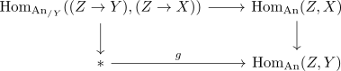
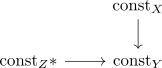
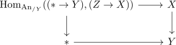

fiberwise condition for n-truncated maps of anima
Proposition
Let $f: X \rightarrow Y$ be a morphism of anima TFAE:
- $f$ is an n-truncated morphism
- for every point $* \rightarrow Y$, the fiber of $f$ is an n-truncated object.
Proof
Let $g: Z \rightarrow Y$ be an object. Recall that there exists a fiber sequence

(cf. fiber sequence of Hom animae in the slice category)
1) $\implies$ 2)
We need to show that $\mathrm{Hom}_{\mathrm{An}_{/Y}}((Z \rightarrow Y), (Z \rightarrow X))$ is \(n\)-truncated.
Now write $Z \simeq \mathrm{colim}_{Z} *$.
and here we can take the adjoint of the map $* \rightarrow \mathrm{Hom}_{\mathrm{An}}(Z,Y) \simeq \lim_{Z} \mathrm{const}_{Y}$, i.e. a natural transformation $\eta: \mathrm{const}_* \rightarrow Y_{Z}$.
Then we have a diagram

Now $\mathrm{Hom}_{\mathrm{An}_{/Y}}((Z \rightarrow Y), (Z \rightarrow X))$ is canonically equivalent to the limit of the fibers of this diagram, which is a limit of $n$ truncated anima, hence again n-truncated (cf. n-truncated anima closed under limits).
2) $\implies$ 1)
Let $g: Z \rightarrow Y$ be an object. Recall that there exists a fiber sequence
(cf. fiber sequence of Hom animae in the slice category)
So in particular specifying to $g = * \rightarrow Y$ the inclusion of an arbitrary point simplifies the diagram to

which computes exactly the fiber over each diagram.